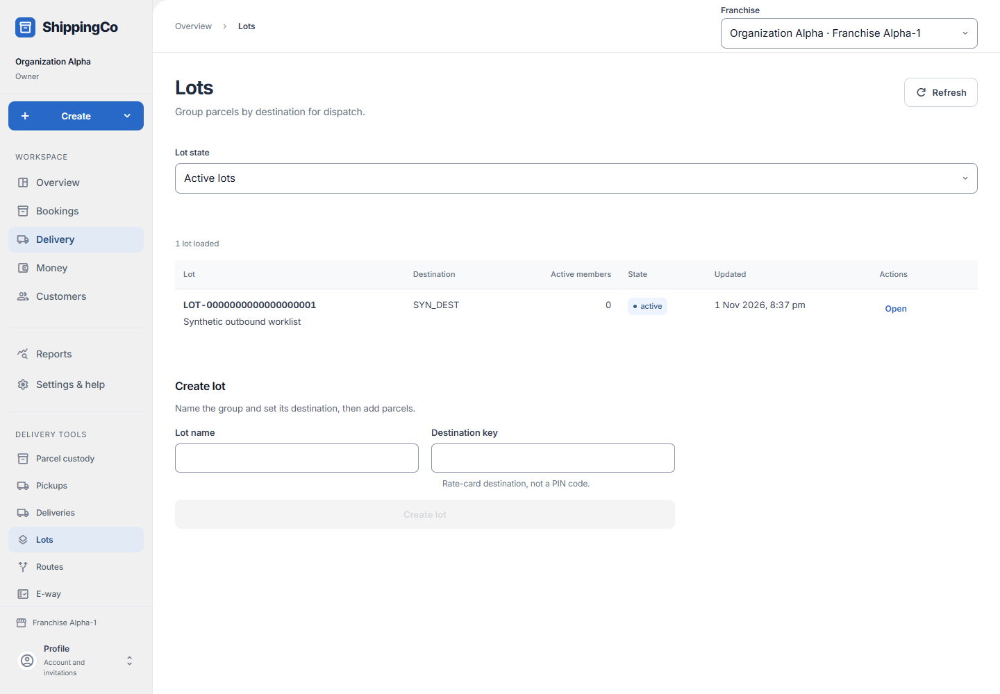
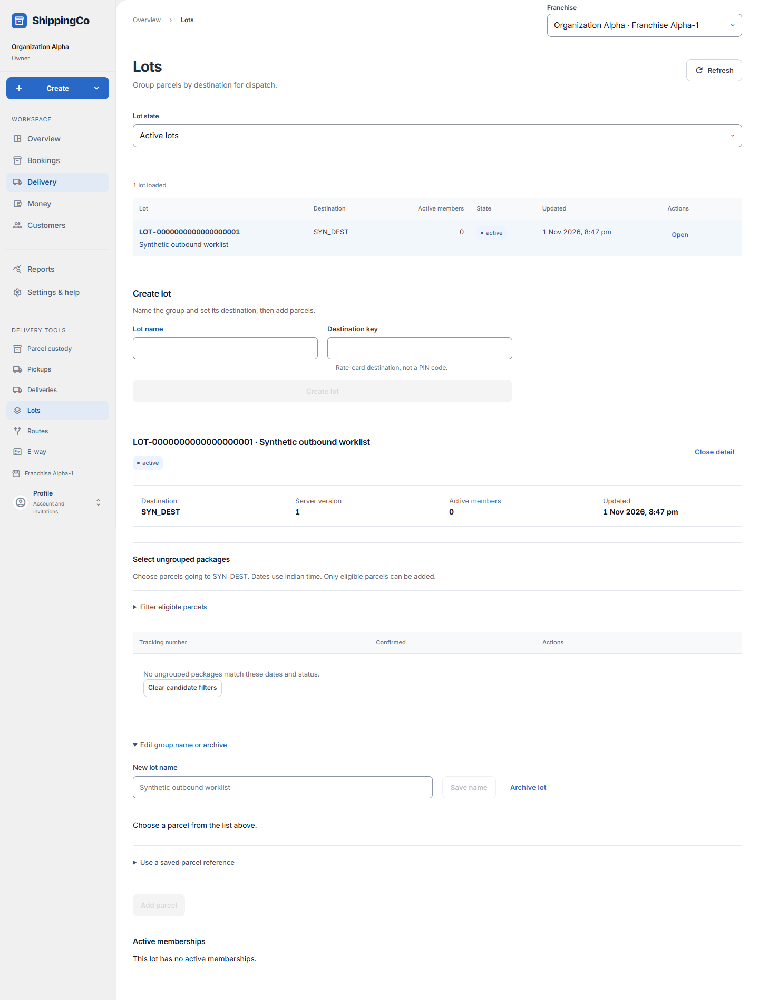

Lots — parcel groups
Keep parcels for the same destination together.

Before you start
Use the destination key in your rate card. You need permission to manage lots.
Create a group and choose its parcels
- Open Delivery, then Lots. Active lots are for current work; Archived lots are retained for reference. Each row identifies the group by code and name, destination, number of active members and last update.
- In Create lot, enter a useful Lot name and the Destination key from your rate card. For example, Mumbai morning group is a name; the routing key must match the configured destination. A PIN code is not a routing key.
- Open the group. Select ungrouped packages lists eligible parcels for this destination. Select the correct tracking number, check the Selected line, then choose Add parcel. Selecting a row alone does not add it.
- Expand Filter eligible parcels when needed. Booked from and Booked through narrow booking dates in Indian time. Ready package status chooses Booked or Checked in. Use More candidate packages to see another page, or Clear candidate filters if nothing matches.
- Use a saved parcel reference is an optional alternative for staff who already have the actual parcel record ID. Normal selection fills this reference for you.
- Expand Edit group name or archive to enter New lot name and Save name. An authorized administrator can Archive lot after reviewing the confirmation. Review members before archiving.
- Move and Remove act on a listed member. For Move, choose the named Target parcel group. Each choice shows its code, name and parcel count. Choose a different active group for the same destination; use More groups if needed. Review the target code, name, destination and state before Confirm move. Use a saved group reference is an optional alternative. For Remove, check the success notice confirming whether the parcel is now ungrouped.
Quick steps
- Open Lots and choose Active lots.
- Enter Lot name and Destination key. Select Create lot.
- Open the lot. In Select ungrouped packages, choose a parcel. Select Add parcel.
- Use Move to send a member to another active lot. Review the target details before Confirm move.
- Use Remove to take a parcel out of the group. Use Save name to rename it.
- If allowed, Archive lot and confirm when the group is no longer needed.
Fields on this screen
- Lot state: Show active or archived groups.
- Lot name: Required. A clear name, up to 120 characters; for example Mumbai morning group.
- Destination key: Required. The rate-card key, up to 32 characters. Uppercase letters, digits and underscores; start with a letter.
- Lot selection booked from / Lot selection booked through: Optional dates for finding ungrouped parcels.
- Ready package status: Choose Booked or Checked in for the candidate list.
- New lot name: Enter a replacement name, then select Save name.
- Parcel ID to add (UUID): Choose a candidate to fill this, or use the exact parcel record ID.
- Target parcel group: Choose the named active group for the same destination. Target active lot ID (UUID) is an optional alternative under Use a saved group reference.
What happens next
The app saves group membership. Grouping or archiving does not record physical parcel movement.
If you get stuck
- No candidates: clear dates and status, check the destination, or check whether parcels already belong to a lot.
- Target archived: choose another active lot.
- Record changed: reload and review the latest group details before trying again.
Selected lot and optional name controls

About this guide
Checked against the current app source on 1 November 2026. Buttons depend on your access and the current record. This guide does not give extra access.